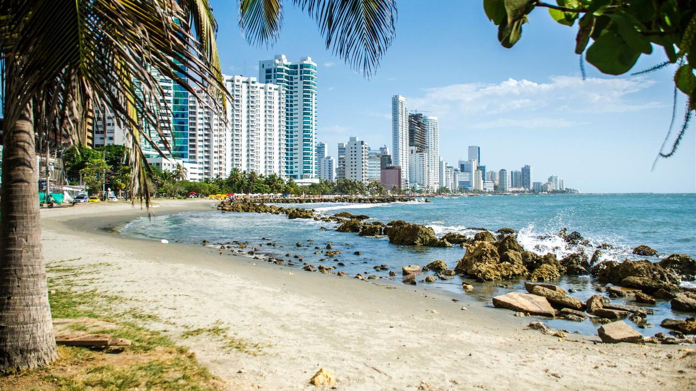
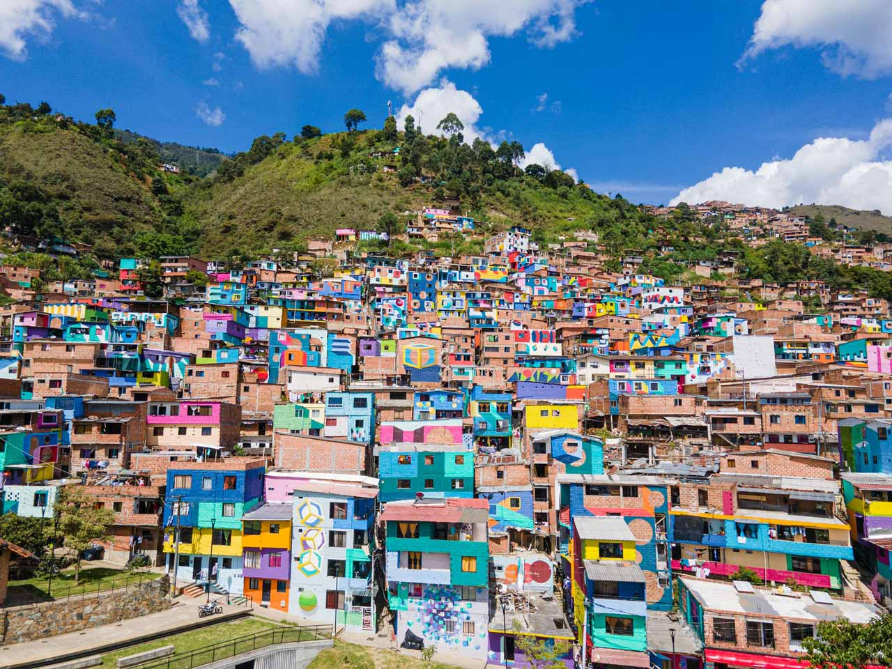
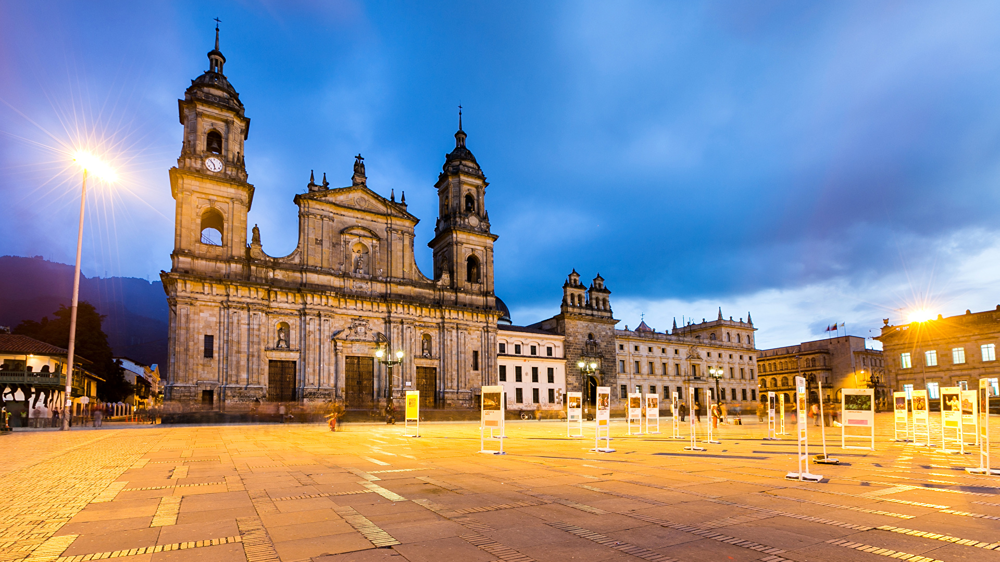

Destinos destacados

Cartagena
Cartagena de Indias es una ciudad costera llena de historia, reconocida por su ciudad amurallada, arquitectura colonial y playas del Caribe que atraen a visitantes de todo el mundo.

Medellín
Conocida como la Ciudad de la eterna primavera, Medellín combina modernidad, cultura e innovación, con eventos como la Feria de las Flores y un clima agradable durante todo el año.

Eje Cafetero
Esta región montañosa es famosa por sus cafetales, pueblos tradicionales y paisajes verdes. Es un destino ideal para conocer el proceso del café colombiano y disfrutar de su riqueza natural.

Caño Cristales
Ubicado en la Sierra de la Macarena, este río es considerado el más hermoso del mundo gracias a sus colores únicos que lo convierten en un espectáculo natural inigualable.

Bogota
La capital del país ofrece una experiencia cultural completa, con museos como el del Oro, el centro histórico de La Candelaria y una vida urbana diversa y dinámica.